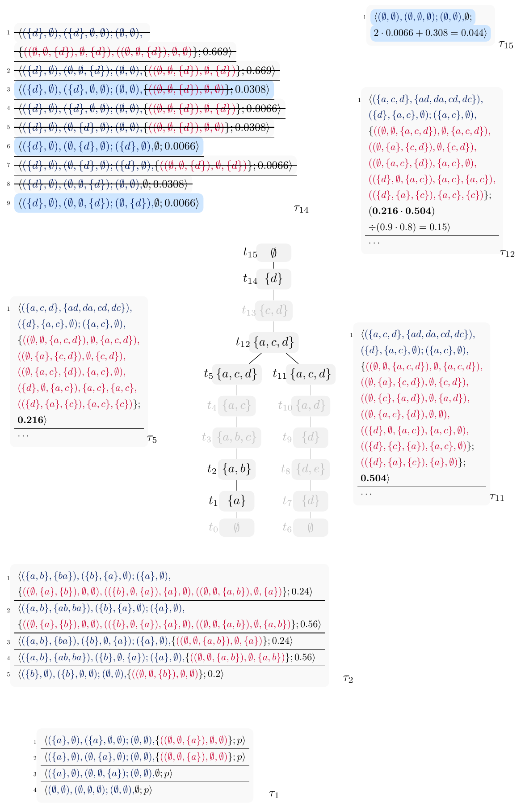

I’m an AI researcher who recently received a PhD in Computer Science with distinction from Graz University of Technology. My doctoral work focused on decomposition-based algorithms for exact reasoning in structured and probabilistic argumentation. Currently, I am exploring how formal reasoning and algorithmic methods can improve the reliability, verifiability, and long-context reasoning of language models.
Andrei Popescu
I’m an AI researcher interested in developing algorithms that improve the reasoning capabilities of language models. My research so far has focused on computational argumentation and algorithms for formal reasoning, particularly on exploiting structural properties to make complex reasoning tasks more tractable via decomposition-based algorithms on tree decompositions.
🎓 Education
- PhD in Computer Science, Graz University of Technology, Graz, Austria (July 2026)
- MSc in Artificial Intelligence, Utrecht University, Utrecht, the Netherlands (August 2019)
- BSc in Computer Science and Engineering, Free University of Bolzano, Bolzano, Italy (July 2017)
💻 Code
Code and prototypes for my main publications are available in the TU Graz Knowledge Representation and Reasoning (KRR) GitLab group. My complete publication list is available on DBLP.
Doctoral Thesis
Title
"Algorithms Exploiting Structure for Argumentative Reasoning"Thesis Overview
Argumentative reasoning is a fundamental decision-making paradigm in AI. It exhibits several desirable features: it is exact, explainable, expressive, and well suited to critical real-world application domains. A major barrier is the high computational complexity that arises across several argumentation formalisms and semantics. In this work, we address this complexity by exploiting underlying structural properties of argumentation graphs, enabling fixed-parameter tractable algorithms, and by developing dynamic programming algorithms whose runtime scales with such properties—in this case, treewidth. We consider several formalisms under different semantics, including:
- Assumption-Based Argumentation (ABA) Frameworks;
- Probabilistic Abstract Argumentation Frameworks (PAF);
- Bipolar Probabilistic Abstract Argumentation Frameworks (BAF).
We develop working prototypes and showcase promising runtime performance. Towards facilitating knowledge engineering in argumentative reasoning, we further investigate structured arguments in ABA and develop a declarative approach to the hard problem of completing partial arguments. Our results encourage extending our algorithms to other prominent semantics and investigating preprocessing techniques that can reduce the treewidth of argumentation frameworks, setting the stage for applying our algorithms. More generally, it is interesting to investigate to what degree the main ideas of our algorithms can be adapted to other parameters that allow parameterised tractability in argumentative reasoning.

Selected Publications
- Completing Structured Arguments in Assumption-Based Argumentation. In Proc. JELIA 2025, Part I, 16093:95–111.
- Dynamic Programming Algorithms for Probabilistic Bipolar Argumentation Frameworks. In Proc. SAC 2025, 1051–1052.
- Advancing Algorithmic Approaches to Probabilistic Argumentation under the Constellation Approach. In Proc. KR 2024, 585–596.
- Reasoning in Assumption-Based Argumentation Using Tree-Decompositions. In Proc. JELIA 2023, 14281:192–208.
- Invited Sixth International Competition on Computational Models of Argumentation: Preliminary Report. In Proc. Arg&App.
- D.C. Leveraging Structure for Tractable Reasoning in Formal Argumentation. D.C. of KR 2024.
- An overview of machine learning techniques in constraint solving. J. Intell. Inf. Syst. 58(1), 91–118.
- An Overview of Recommender Systems and Machine Learning in Feature Modeling and Configuration. VaMoS 2021, 16:1–16:8.
- Master Thesis PARCo: A Knowledge-Based Agent for Context-Sensitive Reasoning and Decision-Making Regarding Privacy. In Proc. BNAIC/BENELEARN 2019.
- Bachelor Thesis Development of a Digital Platform Based on the Integration of Augmented Reality and BIM for the Management of Information in Construction Processes. In Proc. PLM 2018, 46–55.